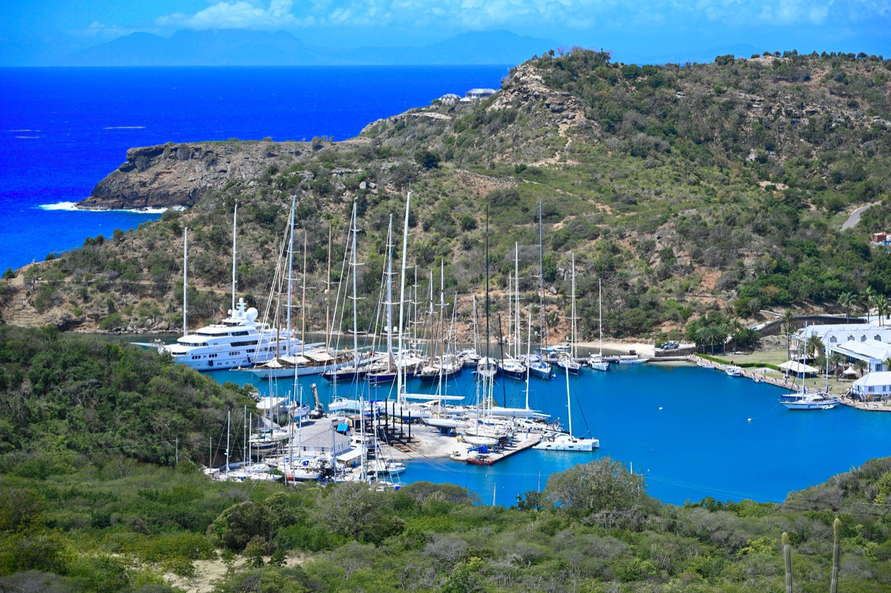
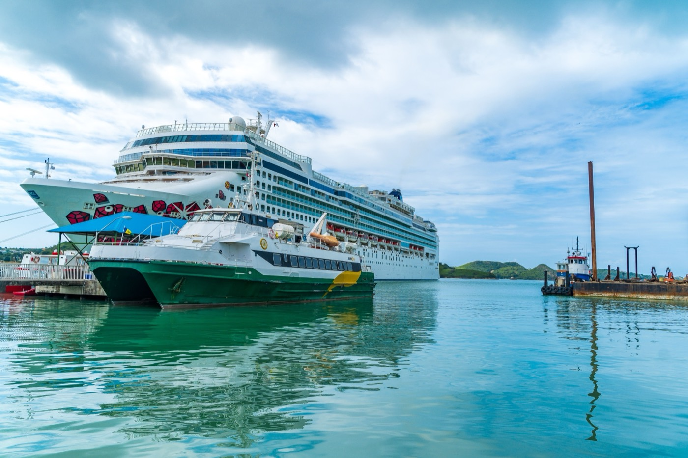

Moving to Antigua & Barbuda in 2026
“365 beaches,” no personal income tax, a $230K second passport, and a tax-residency program that needs just 30 days a year on-island. Here's the cost, the routes, and the fine print.

Antigua & Barbuda markets itself on “365 beaches — one for every day” and a deep sailing heritage, but for relocators the draws are practical: no personal income tax (abolished in 2016), a second passport from $230,000, and a rare tax-residency program that asks for just 30 days a year on-island. It's mid-to-high cost by Caribbean standards, safe, and well-connected by air.
Citizenship by investment (from $230K)
Administered by the CIU since 2013, with no need to relocate (just 5 days on-island across the first 5 years to renew the passport):
- National Development Fund donation: from $230,000 — covers up to four applicants.
- Real estate: from $300,000 in an approved project; a University of the West Indies Fund option ($260,000) suits larger families.
- Processing: roughly 4–14 months. Note the new ECCIRA framework (2026) adds biometrics, interviews, and application caps across the five OECS programs.
Taxes: no personal income tax
Antigua abolished personal income tax in 2016 and levies no capital-gains, wealth, or inheritance tax. A distinctive tax-residency program grants status for just 30 days/year on-island plus a ~$20,000 annual flat tax. Caveats: citizenship alone doesn't create tax residency (that needs 183 days); business and rental income can be taxed; and US citizens keep worldwide IRS obligations regardless of a second passport.
Cost of living
Mid-to-high for the region — pricier than the DR or Grenada, but around 20% cheaper than the US/UK overall. A single person budgets $1,500–$3,000/month; a St John's one-bedroom runs ~$800–$1,000. The EC dollar is pegged at 2.70 to US$1. Housing, imported food, and electricity are the big line items.
Is Antigua safe?
Yes — among the Caribbean's most stable, low-crime nations, with a notably high life expectancy (~79). St John's sees some petty theft and burglary, but violent crime is uncommon and expat areas are calm.
Healthcare
Public care is free; most expats use private care and insurance (~$240–$375/month including evacuation). The Sir Lester Bird Medical Centre handles a wide range of services, but complex cases still require evacuation to a larger island or the US — so keep evacuation cover.
Where expats actually live

Most expats settle around St John's and the coastal/resort areas, with an active social scene (sailing, golf, tennis) and direct flights to the US, Canada, and Europe.
Is Antigua right for you?
- Great fit if: you want a beaches-and-sailing lifestyle with no income tax, a fast passport, and a light 30-day tax-residency option.
- Think twice if: you need budget costs (the DR/Grenada are cheaper) or top-tier local healthcare for complex conditions.
Relocating is step one. Owning the home is step two.
SORA designs and builds homes across the tropics — with our deepest roots in Panama and Costa Rica, where residency is straightforward and building costs a fraction of the coastal Caribbean. If your move is really about a place of your own in the sun, it is worth seeing what a fixed-price build looks like before you commit to any one island.
Frequently asked questions
How much is Antigua & Barbuda citizenship by investment?
From $230,000 via a National Development Fund donation (covering up to four applicants), or from $300,000 in approved real estate. You need only spend 5 days on-island across the first 5 years to renew the passport. Processing runs roughly 4–14 months, now under the new 2026 ECCIRA framework.
Does Antigua have income tax?
No — Antigua & Barbuda abolished personal income tax in 2016 and has no capital-gains, wealth, or inheritance tax. It also offers a tax-residency program requiring just 30 days a year on-island plus a ~$20,000 annual flat tax. Business and rental income can be taxed, and US citizens keep worldwide IRS obligations.
How much does it cost to live in Antigua?
Mid-to-high for the Caribbean — a single person budgets about $1,500–$3,000/month, with a St John's one-bedroom around $800–$1,000. It's roughly 20% cheaper than the US/UK overall; housing, imported food, and electricity are the main costs.
Is Antigua safe?
Yes — it's one of the Caribbean's most politically stable, low-crime nations, with a high life expectancy. St John's sees some petty theft and burglary, but violent crime is uncommon and expat areas are calm.
Sources & verification
Figures in this guide were checked against primary and authoritative sources on 27 July 2026. Immigration, tax, and cost figures change — always confirm the current rules with the official body or a licensed professional before acting.
- Antigua & Barbuda Citizenship by Investment Unit — official CBI program authority
- Antigua & Barbuda Inland Revenue — official tax authority (no personal income tax)
- US State Department — Antigua & Barbuda — travel advisory (Level 1)